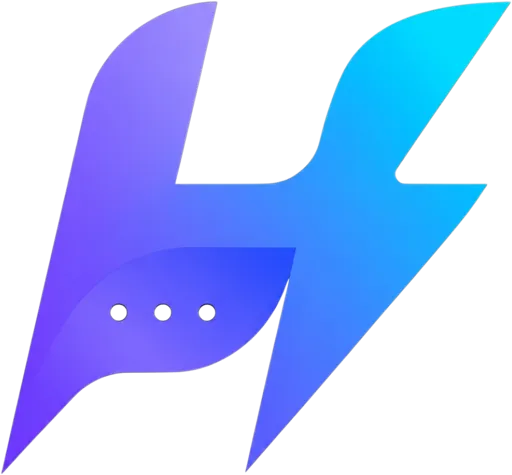
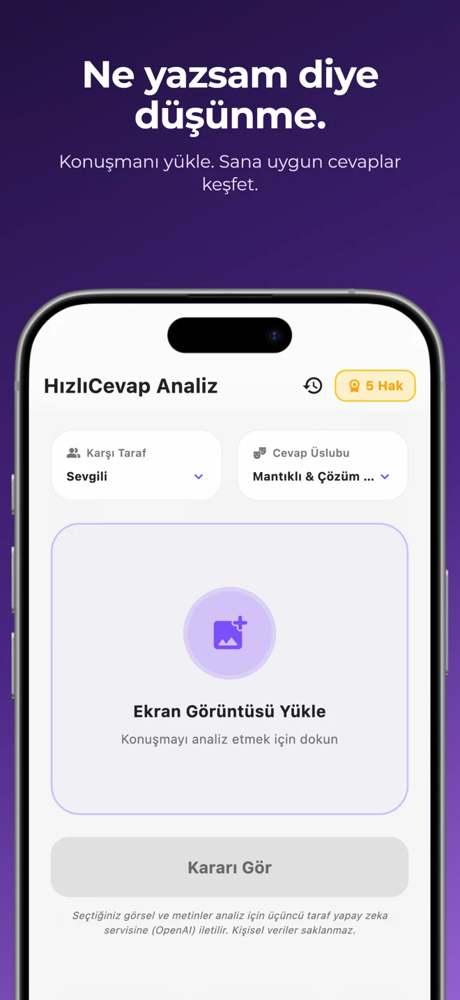
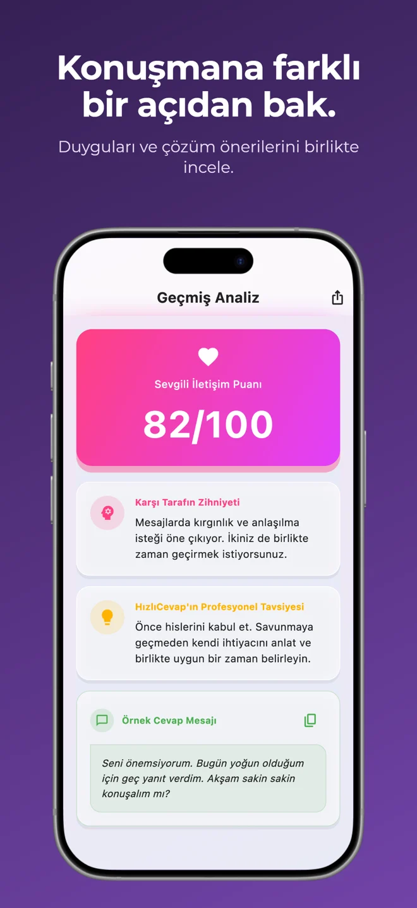
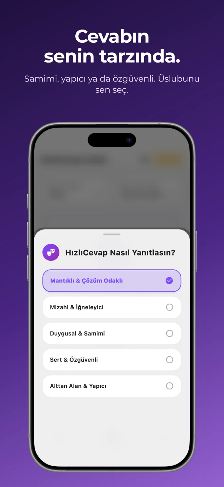
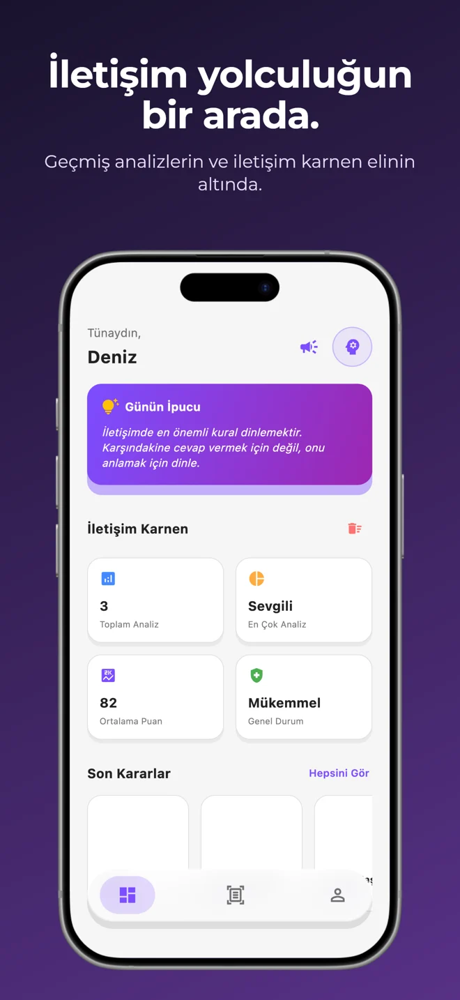

Konuşmanı buraya getir
▧ ekran_goruntusu.png✓
Konuşmanı yükle.
Uygulamada sohbetinin ekran görüntüsünü seç. Kiminle konuştuğunu belirt.

HızlıCevap.App Store’da keşfetCEBİNDEKİ İLETİŞİM ASİSTANI
Bazen bir mesaj, kafanda bin cevap.
Konuşmanı yükle, tarzını seç. Kendini anlatacak kelimeleri birlikte bulalım.
iPhone için · Yapay zekâ destekli
Bugün de mi görüşemiyoruz?
18:42“Seninle görüşmek istiyorum. Bugün yetiştiremiyorum ama yarın akşamı birlikte planlayalım mı?”
EKRAN GÖRÜNTÜSÜNDEN CEVABA
Uzun uzun anlatmana gerek yok.
Konuşman, başlangıç noktamız.
Uygulamada sohbetinin ekran görüntüsünü seç. Kiminle konuştuğunu belirt.
Sakin, samimi ya da özgüvenli. Cevabının nasıl hissettireceğine sen karar ver.
Mesajların tonuna dair yorumları ve cevap önerisini incele. Kendine göre düzenle.
AYNI SEN. FARKLI KONUŞMALAR.
Patronuna net, arkadaşına içten.
Her konuşmanın dili başka.
Teslim tarihini ve öncelikleri açıkça konuşmak, beklentileri ortaklaştırmana yardımcı olabilir.
“Bugün ilk kısmı tamamlayabilirim. Tamamının yarına yetişmesi için diğer işlerden hangisini öne alalım?”
KELİMELER DE TARZINI YANSITSIN
Tek bir doğru cümle yok.
Kendine yakın gelen üslubu seç.
“İkimize de uyan bir saat belirleyelim, böylece planımız netleşsin.”
“Ne zaman görüşüyoruz?” mesajına örnek bir yaklaşım.HIZLICEVAP’I YAKINDAN TANI
Konuşmana farklı bir açıdan bak.
Geçmiş analizlerini bir arada gör.




Uygulamaya konuşmanın ekran görüntüsünü yükler, karşı tarafı ve cevap üslubunu seçersin. HızlıCevap, mesajları yapay zekâ ile yorumlayarak farklı bir bakış açısı ve örnek yanıt sunar.
Hayır. İş, arkadaşlık ve günlük iletişimde de ne yazacağına karar verirken destek alabilirsin. Konuşmanın bağlamına uygun seçenekleri uygulamada seçebilirsin.
Karar senin. Öneriyi bir başlangıç noktası olarak kullan, kendi duygularına ve durumuna göre düzenle. Yapay zekâ yorumları kesin bir zihin okuma ya da profesyonel danışmanlık değildir.
HızlıCevap’ı iPhone için App Store’da bulabilirsin. Güncel uyumluluk, fiyat ve uygulama içi satın alma bilgileri mağaza sayfasındadır.
Bu site uygulamayı tanıtır; örnekler etkileşimli birer gösterimdir. Kendi konuşmanı analiz etmek için HızlıCevap iPhone uygulamasını kullanabilirsin.
BİR SONRAKİ MESAJINDA
Son söz her zaman senin.